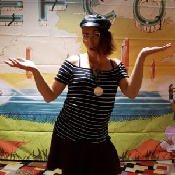

It's been two years since I came out. So much has changed. So much has improved.
If 2018 was about accepting that truth, 2019 was about taking action on it..
For starters, I changed all my online profiles this year. I changed my name this year.
I realized that my career choices over the past several years had led me uncomfortably far from my ethics. (More on that later…)
The result? I spent eight months of 2019 uninsured and underemployed, but still very busy.
I interviewed at dozens of tech companies … and only got one offer.
I burned through 😱 $30,000 😱 of savings because I kept thinking, surely I’ll land the next interview! I would have reorganized my life sooner, had I known I’d be without regular work for a total of 20 months.
I underestimated how much misogyny and transphobia still rule the tech industry.
I wrestled with an increasing understanding of a contextual, intersectional identity, and adjusted to the embrace of my gender.
Yeah, I’m trans, so what? If you don’t like it, please get off this ride right now.
One might say, 2019 was a year of course correction.
I’m much more involved in things that matter to me now, and also more aware of what I will not compromise on in order to earning a living. Straddling between a day job in the tech industry and a vow I took years ago that I would work to benefit all sentient beings … continues to be a challenge in time and emotional management.
This means realigning my financial goals and re-prioritizing my time … but let’s look back at 2019 a little more.
I did a few things!

It wasn’t all just rumination and navel-gazing… I actually did a few things in 2019!
- started this blog
- grew tits (heck yeah I’m proud of them!)
- joined a podcast for my first time (that was fun!)
- got a chapter published in a book about the intersection of the buddha-dharma & my experience being trans
- joined the Kubernetes community & accepted a nomination to their Code of Conduct Committee
- continued my role as a board member on Seattle’s local sex-positive 501(c)3
- worked behind the scenes with the QueerCon board to improve their trans inclusivity
- got a job at Microsoft (ikr? they’ve changed… but still… it’s weird)
- spoke at a few conferences
- ML4ALL, one of the best regional conferences I’ve ever been to. I hope it continues!
- OpenInfra Summit. I stressed about being back after two years. After transitioning.
- SeaGL, local opensource enthusiasts’ group, lotsa greybeards in the rooms
- and IgniteSeattle was perhaps the singularly most pivotal talk experience of my career to date
- in a rare turn of events, I attended several conferences without speaking at them!
- WomenInCloud
- LesbiansWhoTech
- BSidesSF
- DefCon
- KubeCon
- HushCon
- KinkFest
- oh, and I went on a few camping trips:
- me & a girlfriend in the Utah desert
- just me in the Cascades – I had intended to do more than one solo offroad trip, but then other things happened
- CriticalNW – it’s like camping, only with 1,500 of my closest friends!
- BurningMan – 😂 & 😭 this year as I handled the transfer and purging of all the gear from Camp Potluck. I found the yearbooks we made in 2012, ’13, and ’14, then met up & shared them a few old friends …
I never feel like I've done enough
… until I look back at what I have done.
This helps me to know what I’m capable of, helps me set goals for the next cycle. It helps me overcome imposture syndrome.
So, about next year …
Goals for 2020
- survive the election cycle – emotional health is key. I’m continuing to reduce my consumption of social media & curate where I’m creating media. be the change you want to see in the world means increasingly relying on decentralized platforms – my blog, mastodon, etc.
- rebuild my image / brand / career – openly transitioning changed everything in ways I’m deeply grateful for, and in ways I’m still learning to see.
- finally get that tattoo I’ve been dreaming of since 2015 😀
- continue rebuilding my health – more camping trips, more hiking, and more routines
- write more, on this blog and elsewhere. I’d like to publish a book of my own.
- join more podcasts, and maybe start one. Who wants to join my podcast?
- continue supporting and learning from younger queers in tech
- attend less, speak more at tech conferences. I can do one a month if I reuse content, less if each talk is brand new.
- follow through on activism that I’ve become engaged with. I see windows of opportunity that could be incredibly impactful & need to keep up my energy to move on them.
- continue building intimate partnerships
Hmm… I didn’t mean for that list to be in any particular order, but apparently I put “relationship” at the bottom and maybe that’s be a bad sign? 🤷
Anyway, that’s all for now! ✨
See you in 2020